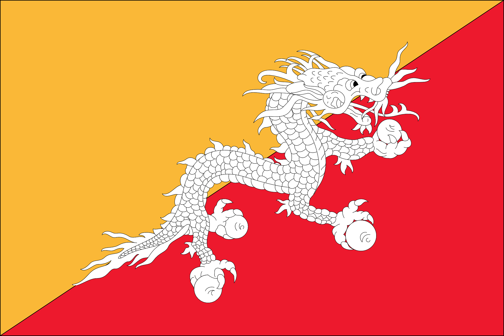

FLAG
The national flag of Bhutan features a distinct design divided into two horizontal sections. The upper section is yellow, symbolizing the prosperity and authority of the monarchy, while the lower section is red, representing the strength and bravery of the people. At the center of the flag is a white dragon, which symbolizes protection and power. The dragon is also an important symbol in Bhutanese culture.
Administrative Division of Bhutan

-
Dzongkhag: Bhutan consists of 20 Dzongkhags, each with its own administrative setup based on geographical and demographic considerations. Some examples of Dzongkhags include:
- Thimphu Dzongkhag: The capital district.
- Paro Dzongkhag
- Bumthang Dzongkhag
- Trashigang Dzongkhag
- Gewogs: Gewogs are the sub-divisions within a Dzongkhag, with each Dzongkhag comprising several Gewogs.
- Thromdes: Thromdes refer to urban areas or communities with significant development and infrastructure. They are administratively distinct from Gewogs.
- Local Government: Each Dzongkhag and Gewog is governed by officials known as Dzongdags (district governors) and Gewog Dromdes (block heads), respectively, who oversee local administration and development.